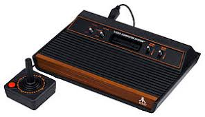

Atari 2600

The Atari 2600, released in 1977, was one of the pioneering home video game consoles, bringing the excitement of arcade games into living rooms worldwide. Known for its innovative use of interchangeable game cartridges, it allowed players to enjoy a variety of games on a single system, something never seen before. The console’s iconic joystick controller, with a simple one-button design, provided an intuitive and immersive gaming experience. Despite its limited graphics and sound capabilities by today’s standards, the Atari 2600 is remembered for its cultural impact and its role in making video gaming a mainstream pastime. It launched a revolution in home entertainment, offering a wide range of games such as Space Invaders, Pac-Man, and Asteroids. Its legacy lives on as a cherished symbol of the early days of video gaming, still adored by retro enthusiasts and collectors.
Key Features
Atari CX2600 Heavy Sixer (1977)
The Atari CX2600 "Heavy Sixer", also released in 1977, was a more robust version of the original Atari 2600, with six joystick ports instead of the usual two. This model was known for its heavy, durable build and was designed to withstand hours of gaming. Like the original, it supported interchangeable game cartridges and played a variety of popular games. Its unique design made it one of the first consoles with the potential for multiplayer gaming with more than two players. Despite being eventually replaced by the more compact models, the Heavy Sixer remains a nostalgic favorite for collectors due to its vintage appeal and solid construction.
Key Features
Atari 2600 Jr. (1986)

The Atari 2600 Jr., released in 1986, was a more compact and cost-effective version of the original Atari 2600. It was designed to attract a new generation of gamers while preserving the legacy of its predecessor. With a sleeker and smaller form factor, the Atari 2600 Jr. maintained compatibility with the same game cartridges as the original Atari 2600, allowing players to enjoy their favorite games. The console's design was aimed at simplifying the user experience, with a streamlined controller port configuration and improved functionality for a wider range of users.
Key Features
All Console Technical Specifications
| Feature | Specification |
|---|---|
| Processor | MOS Technology 6507 (1.19 MHz) |
| RAM | 128 bytes |
| Resolution | 160 x 192 pixels |
| Colors | 128-color palette |
| Sound | 2-channel mono audio |
| Joystick Ports | 2 (Heavy sixer has 6) |